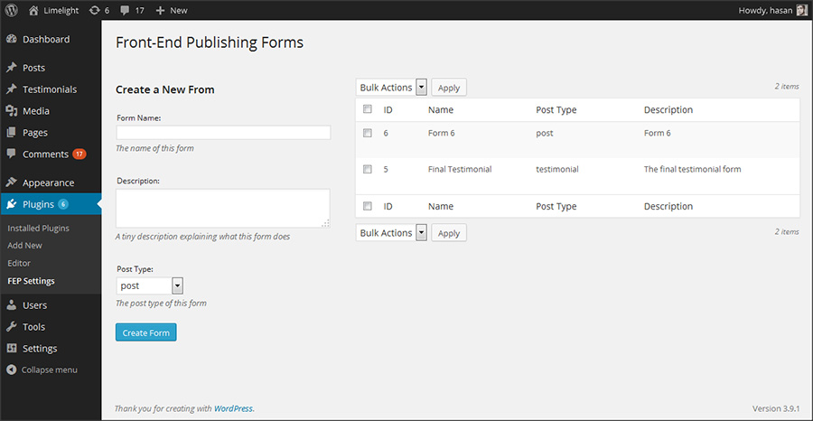
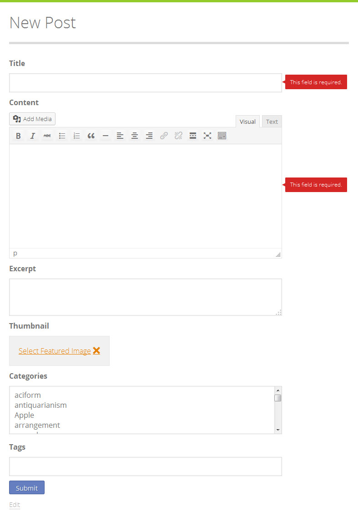
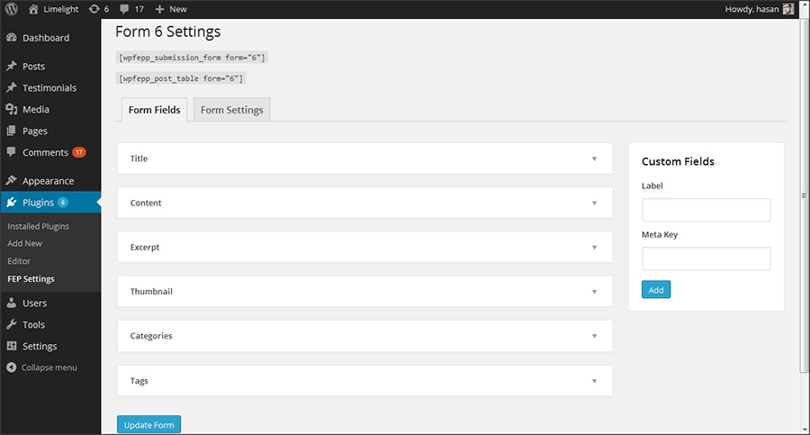
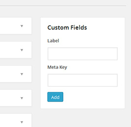

Frontend Publishing Pro
Starter guide
- created: 08/01/2014
- latest update: 08/08/2014
- by: Hassan Akhtar
- wpgurus.net/
- email: support@wpgurus.net
Getting Started
In this section you will learn how to install the plugin and create a simple frontend publishing form with it. Just follow these steps:
1. Go to Plugins > Add New in your WordPress site's admin panel and click on the Upload link at the top of the screen.
2. Upload the plugin's zip file. Once the file has been uploaded, activate the plugin.
3. Access the plugin control panel located at Plugins > FEP Settings.
4. To create a new form just enter a suitable name, description and post type and click 'Create Form'. After a few seconds the newly created form should show up on the right side of the screen.

5. The form is now ready for use and can be integrated into any post or page. Just create a new page and add [wpfepp_submission_form form="X"] in the content area. Replace X with the form ID. The form should look something like this:
{kind=link}

6. On a different page use the shortcode [wpfepp_post_table form="X"]. This shortcode will create a list of posts with edit and delete links. The list will contain all the posts of the post type supported by form X. It should look something like this:
{kind=link}
{kind=link}
Customizing A Form
If you want to customize an existing form then here are the basic steps that you need to follow:
1. Go to Plugins > FEP Settings.
2. In the list table located at the right side of the screen you will see all your existing forms. Hovering over a form name should make the 'Edit' link visible. Click on this link to start modifying the appearance and behavior of the form.
{kind=link}
3. On the next screen you will see a list of form fields. You can drag and drop these fields to rearrange them or click on a field to change its settings.

4. Once you are fully satisfied with your form save your changes and see them in action on the frontend.
{kind=link}
Defining Restrictions for a Field
One of the things that sets Frontend Publishing Pro apart from the multitude of form plugins available on the Internet is that it allows you to define restrictions such as word range, maximum links, number of comma separated sections and so on. A post is not created until all the requirements are met.
To define restrictions for a particular form field:
1. Go to Plugins > FEP Settings and start editing the form for which you want to define restrictions.
2. On the next screen click on any field to slide open its settings. In this case we will use the Content field as an example. This is what it looks like on the settings page:
{kind=link}
Here you can change the word count range, max links and the HTML tags that you want to be removed automatically before post insertion.
IMPORTANT
There are a few things that you need to keep in mind:
- If you do not want to define a particular restriction just leave it empty. For instance if you don't want to set a maximum word count limit then just leave the area empty.
- HTML tags are removed from submitted content just before it is inserted into the database. No errors are shown to the user. Same goes for nofollowing of links.
Working with Custom Fields
If you want to save a user-entered value as post meta then you should create a custom field. Here's how you can do so:
1. Go to Plugins > FEP Settings and start editing the form for which you want to create a custom field.
2. On the right side of the page you will notice a box titled 'Custom Fields'. Its looks like this:

Enter a label along with a valid meta key and hit the Add button. Your new custom field will show up under the default form fields.
Let's say you want to give your users the ability to submit a byline along with each post. All you have to do is create a custom field by entering a label and a valid meta key like 'byline' or 'about_the_author'. After that you can get the byline for each post by using something like this:
<?php $byline = get_post_meta( $post_id, 'byline', true ); ?>
CopyScape
Since version 2.7, Frontend Publishing Pro allows you to pass each submission through CopyScape to make sure that it is completely unique. Here's how you can start using this feature:
1. Go to Frontend Publishing Pro > Settings > CopyScape and enter your username and API key in the given fields. These items can be obtained here. Please note that this feature will not work unless you purchase some CopyScape credits first.

2. Once you have added your info you can enable the copyscape feature for any form by going to that form's settings.

3. If you want to add the CopyScape status of each submission in the email sent to you at the time of submission, go to the Emails tab of your form and add the %%COPYSCAPE_STATUS%% placeholder anywhere in the email.
Things you should know:
When it comes to CopyScape integration, you have two main options. The first option is to check the user submission each time he or she hits the submit button and show an error to the user in case the CopyScape test fails. The advantage of this approach is that copied content will never make it to your database and you will not have to waste your time deleting it manually. The disadvantage is that a CopyScape credit will get spent everytime the user hits the submit button. The second approach is to check the post quitely and add it to the pending queue if it is copied. Before you activate this feature, you must decide which approach is more suitable for you and change the plugin settings accordingly.
reCaptcha
reCaptcha is Google's popular service that allows you to protect your website from automated bots. Frontend Publishing Pro uses the latest version of this service i.e. the no captcha reCaptcha. To add a captcha to your forms you need to follow these steps:
1. Go to Frontend Publishing Pro > Settings > ReCaptcha and enter your site key and secret in the given fields. These items can be obtained here.

2. Once you have added your info you can add the captcha to any form by going to that form's settings.
Things you should know:
To ensure a pleasant experience, the users are required to fill in the captcha only once during their interaction with a form. Once they have submitted the form sucessfully (by saving a draft or submitting the post), the captcha will hide automatically until the page is reloaded.
Translating the Plugin
You can easily translate the plugin into your language by using the POT file included in the languages folder. Here are the steps that you will have to follow:
1. Open strings.pot located in the languages folder with the help of your translation software (POEdit etc).
2. Translate the plugin's strings.
3. Save the resulting po/mo files in the lanugages folder. The names of these files should be in this format: wpfepp-plugin-cs_CZ.mo
Developers
Here are the several actions and filters offered by the plugin:
Actions:
wpfepp_form_FORMID_fields
Where FORMID is the id of the form that you want to modify. This simple action can be used to add new fields to a form. Here's a simple example:
function my_fields($current_values){
//When the user edits a particular post the $current_values argument contains the values of that post.
$user_email = get_post_meta( 'user_email', $current_values['post_id'] );
?>
<label>Your Email</label>
<input type="email" name="email" value="<?php echo $user_email; ?>" />
<?
}
add_action('wpfepp_form_1_fields', 'my_fields');
This function will add new field at the bottom of the form.
wpfepp_form_FORMID_actions
Where FORMID is the id of the form that you want to modify. This action is performed after a post has been successfully added or updated. You can use it to handle the custom fields added with the help of the previous action hook.
Continuing the above example:
function my_actions($post_data){
// $post_data is the $_POST array from the form. It also contains the post_id
$user_email = $post_data['email'];
$subject = 'Thank you for your contribution';
$message = 'Your post has been recieved and will be reviewed by one of our editors soon.';
wp_mail( $user_email, $subject, $message );
update_post_meta( $post_data['post_id'], 'user_email', $user_email );
}
add_action('wpfepp_form_1_actions', 'my_actions');
Filters:
wpfepp_form_FORMID_safe_tags
Where FORMID is the id of the form that you want to modify. The plugin automatically removes unsafe HTML tags like script, embed and so on. The function used for this purpose is wp_kses. If you want to modify the whitelist of HTML tags that are considered safe by the plugin then you can do so with the help of wpfepp_form_FORMID_safe_tags. However you must have an understanding of the wp_kses function and how it expects tags and attributes to be formatted.
function my_safe_tags($tags){
//Allow the script tag and its type attribute
$tags['script'] = array(
'type' => array()
);
return $tags;
}
add_filter('wpfepp_form_1_safe_tags', 'wpfepp_ext_tags');
If you want us to add any other actions and filters just let us know.